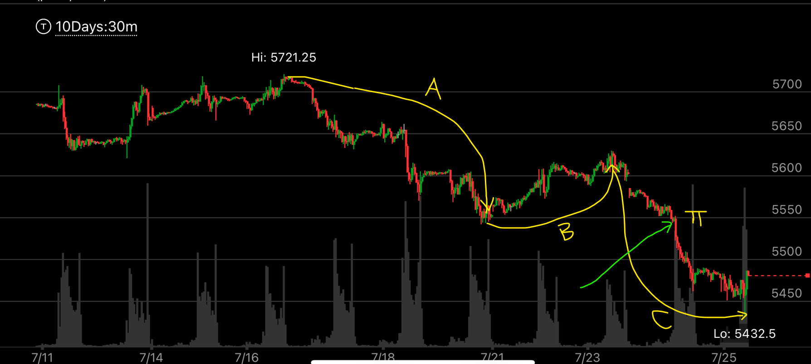
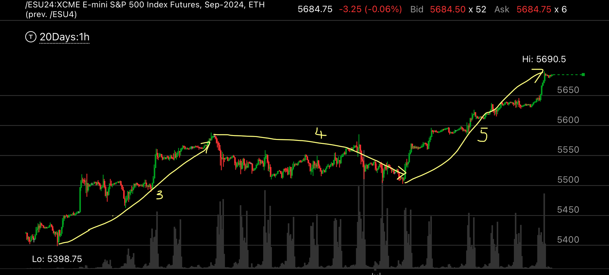
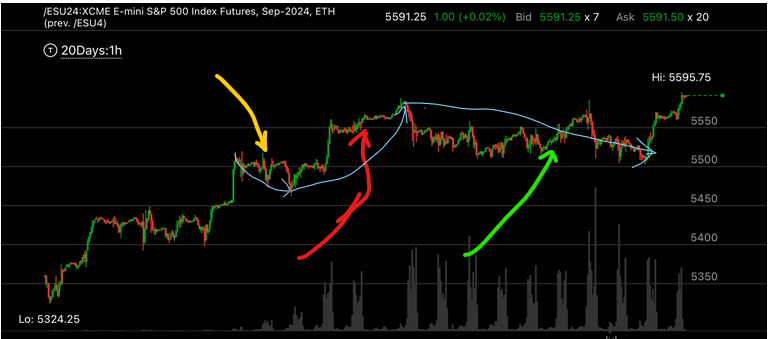
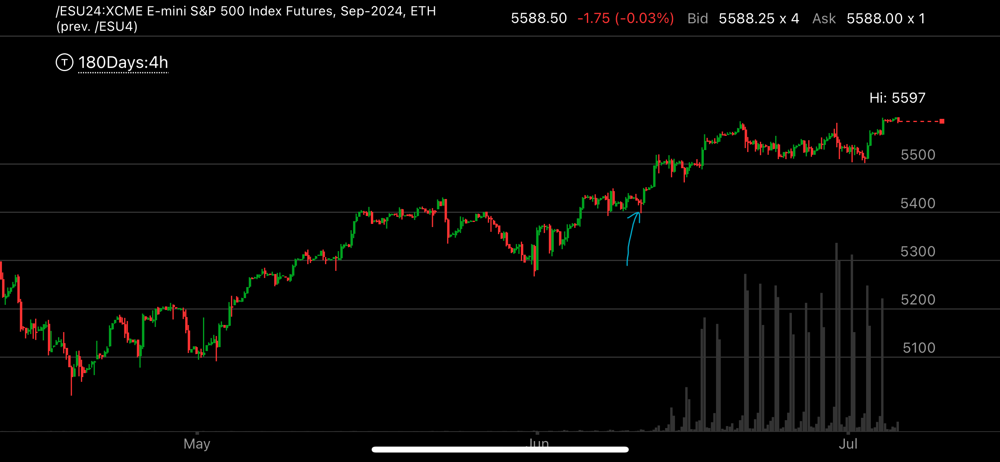

艾略特波浪理论
- 艾略特波浪理论里面，有几点和我的模型相符。
- 第四浪不会进入第一浪的范围。 这个就是跨越走势。在我的解释里面，这个是为了不让在第一浪顶点做空的人可以轻松逃脱
- 交替，相邻的大浪会用不同的方式
- 驱动浪里面，第三浪不是最短的一浪。反向浪里面，C浪是A浪的1.2倍以上。 这个应该就是两段走势，而且可能是反向浪更符合要求。
两段走势里面， 第二段浪更长，更猛烈，然后就很快反转了。说明反向才是真的趋势。 比如上涨的时候出现两段走势，那么说明下跌才是主要趋势。
- 观察中，每一个浪的时间长度差不多，而幅度则和具体浪有关。
- 时间上看，12345浪的时间差不多，ABC浪的时间差不多，但是ABC浪和它前面的12345浪的时间可以相差很远。可以认为是没有关系的。
- 反向浪当中，如果出现了加速，也就是说，比如加速越过前面的高点或者低点的时候，这个幅度，应该参考ABC浪。
- C浪的长度： 和A浪一样长。 这个是最常见的情况
- C浪的长度： 斐波那契延长。 C浪是A的1.6倍
- C浪的长度： 失败的C浪， C浪可以比A 更短，这个说明，原来的趋势很强，C浪很短就完成了。

图示:这个是前面的12345浪后的调整浪。可以看出来是ABC浪。其中注意Pi 点，绿色箭头。这个是C浪加速越过前面的低点。
这个点一定会低于前面，但是 到底多低，应该参考A浪的长度。A浪长度为180点，所以这个点应该很长，而不应该立刻就接住。另外，从时间看，也应该等待一天，
而不是低于这个点，马上就进入。

图示:艾略特波浪的时间长度应该要符合。这个和以下两图都是一个时间的图。可以看到，这是第3，4，5浪。黄色线加箭头
代表了每一个浪。 时间都是7，8天左右。 而第5浪，它上冲的时候，从最低点冲破高点的时间，大大短于从高点跌倒低点的时间。看下图会更加清楚。
这样，一个5浪走势就结束了。而且第5浪本身也分成三个浪,一开始冲高，然后缓慢冲高，最后再次快速冲高。

图示:细的蓝线代表第二，三，四浪。黄色是第二浪，红色是第三浪，可能是从5450~5580。 绿色是第四浪。它拖延的时间很久，但是一直处于5500以上，不会进入
第一浪5500之内。 它之所以没有反转，可能是因为第四浪开始的时候，是从最高点快速下来，这样就不是顶部。它在徘徊了很久后，从5500开始，快速冲到了
5600附近。这个应该是典型的5浪模式。而第五浪，从最低点开始，到最高点，用的时间远远低于从第三浪的最高点到第四浪最低点的时间。
如果是这样，接下来可能是ABC浪，或者开始反转，这个就看它怎么走了。是不是两段走势了。

图示:同一个时间，时间范围扩大来看，180天的图。 蓝色箭头是第一浪的起点。前面从低点反弹，然后反弹到了前面的高点。盘整一段时间后，开始五浪走势。